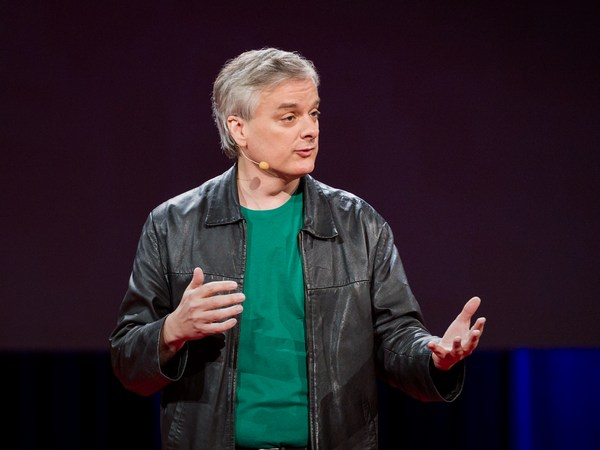

Loading…
Дэвид Чалмерс
Как объяснить сознание?
Previous talk
Play
Pause
Next talk
Volume
0:00
/
0:00
Subtitles
Show talks
Full screen
Open on TED.com
Exit full screen
Mute
Mute

18:37
Дэвид Чалмерс: Как объяснить сознание?
Turn subtitles off
Greek
English
Vietnamese
Italian
Arabic
Portuguese, Brazilian
Czech
Spanish
Russian
Dutch
Portuguese
Chinese, Traditional
Norwegian Bokmal
Turkish
Latvian
Chinese, Simplified
Romanian
Polish
French
Bulgarian
Croatian
German
Hungarian
Persian
Finnish
Japanese
Hebrew
Georgian
Serbian
Korean
Slovak
Ukrainian
Slovenian
Thai
Get personal recommendations and the newest TED ideas sent straight to your inbox
Sign up now
Rewatch